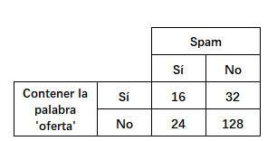
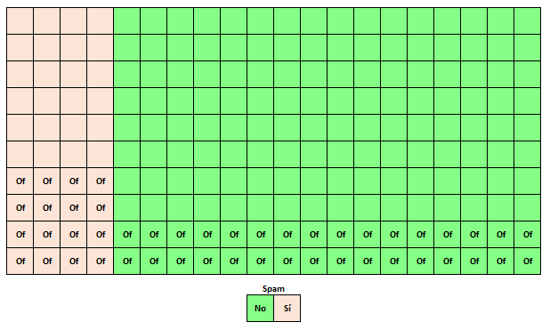
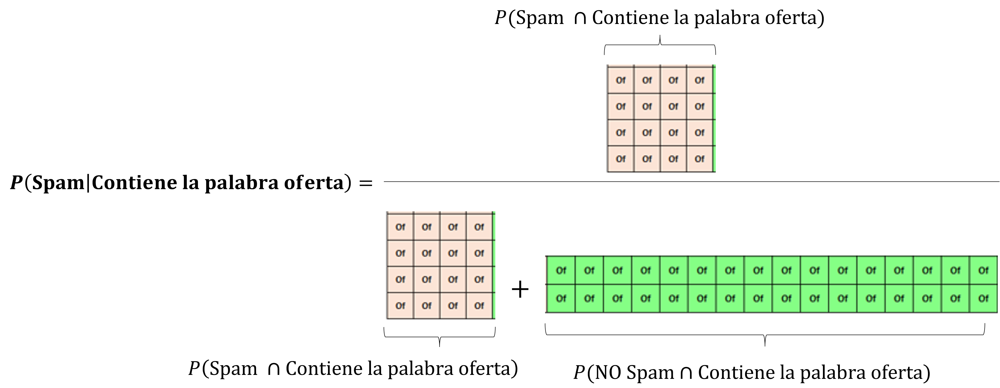
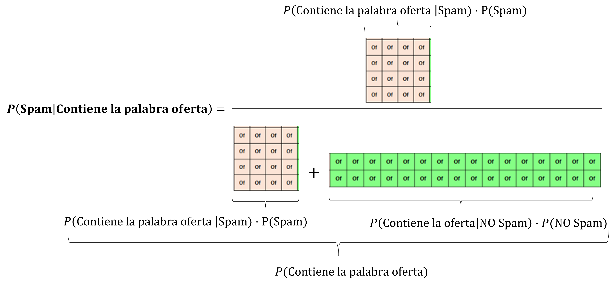

Teorema de Bayes
Ejemplo
Considere los siguientes eventos, en relación a la detección de correos electrónicos que son spam.
- Contener la palabra ‘oferta’.
- Ser SPAM.
Se muestra la tabla de contigencia para 200 correos en relación a estos eventos:

Representación visual
Visualmente, se puede representar como:

- Cada cuadro representa un correo, en caso de contener la abreviación ‘Of’, esto indica que el correo es Spam.
Probabilidad condicional
La pregunta natural que surge es la siguiente:
¿cuál es la probabilidad de que un correo sea spam si contiene la palabra ‘oferta’?
A partir de esta probabilidad, se podrá decidir si el correo se envía a la bandeja de Spam o no.
Usando el Teorema de Bayes, se obtiene:
\[ P (\text{Spam | Contiene la palabra oferta}) = \dfrac{P (\text{Contiene la palabra oferta | Spam}) \cdot P(\text{Spam})} {P (\text{Contiene la palabra oferta})}\]
Derivación visual
Supongamos que la representación visual es un rectángulo de área 1 representando probabilidad.
Tenemos que:

Dado que:
\[ P(\text{Spam} \cap \text{Contiene la palabra oferta}) = P(\text{Contiene la palabra oferta|Spam}) \cdot P(\text{Spam}) \]
\[ P(\text{NO Spam} \cap \text{Contiene la palabra oferta}) = P(\text{Contiene la palabra oferta|NO Spam}) \cdot P(\text{NO Spam}) \]
Se reemplaza y se obtiene:

El resultado final es:
\[ P (\text{Spam | Contiene la palabra oferta}) = \dfrac{P (\text{Contiene la palabra oferta | Spam}) \cdot P(\text{Spam})} {P (\text{Contiene la palabra oferta})}\]
Este resultado coincide con lo ya antes mostrado por el Teorema de Bayes.
Actualización de probabilidad
De la derivación visual, se tiene que:
\[ P (\text{Spam | Contiene la palabra oferta}) = \dfrac{16}{16+32} = \dfrac{16}{48} = \dfrac{1}{3}\]
Usando el teorema de Bayes:
\[ P (\text{Spam | Contiene la palabra oferta}) = \dfrac{P (\text{Contiene la palabra oferta | Spam}) } {P (\text{Contiene la palabra oferta})} \cdot P(\text{Spam})\]
Esto se puede ver de la siguiente forma, \(P(\text{Spam | Contiene la palabra oferta})\) es una escalación de \(P(\text{Spam})\) por el factor \(\dfrac{P(\text{Contiene la palabra oferta | Spam}) }{P (\text{Contiene la palabra oferta})}\)
Para este ejemplo:
\[\dfrac{P(\text{Contiene la palabra oferta | Spam}) }{P (\text{Contiene la palabra oferta})} = \dfrac{16/40}{48/200} = 1.6667\] Así:
\[ P (\text{Spam | Contiene la palabra oferta}) = 1.6667 \cdot P(\text{Spam})\]
Es decir, la probabilidad de que sea Spam de aquellos correos con la palabra oferta es 1.6667 veces que la probabilidad (general) de que sea Spam.
\[ P (\text{Spam | Contiene la palabra oferta}) = 1.6667 \cdot \dfrac{40}{200} = \dfrac{1}{3}\]
Ejemplo adicional
Considere el siguiente enunciado: “Cuando un equipo anota el primer gol, las probabilidades de victoria suben un 20%”, esto se traduce en:
\[ P(\text{Ganar}|\text{Anotar primer gol})= 1.20 \times P(\text{Ganar})\] Por lo que:
\[ \dfrac{P(\text{Anotar primer gol|Ganar})}{P(\text{Anotar primer gol})} = 1.20\]
Consideraciones conceptuales
Si A y B son independientes: \(P(A \cap B)=P(A) \cdot P(B)\)
Si A y B no son independientes: \(P(A \cap B) = P(B|A) \cdot P(A)\)
\(P(B|A)= \underbrace{P(B \cap A|A)}_{\text{A ya se dio}}\neq \underbrace{P(B \cap A)}_{\text{A NO se ha dado}}\)